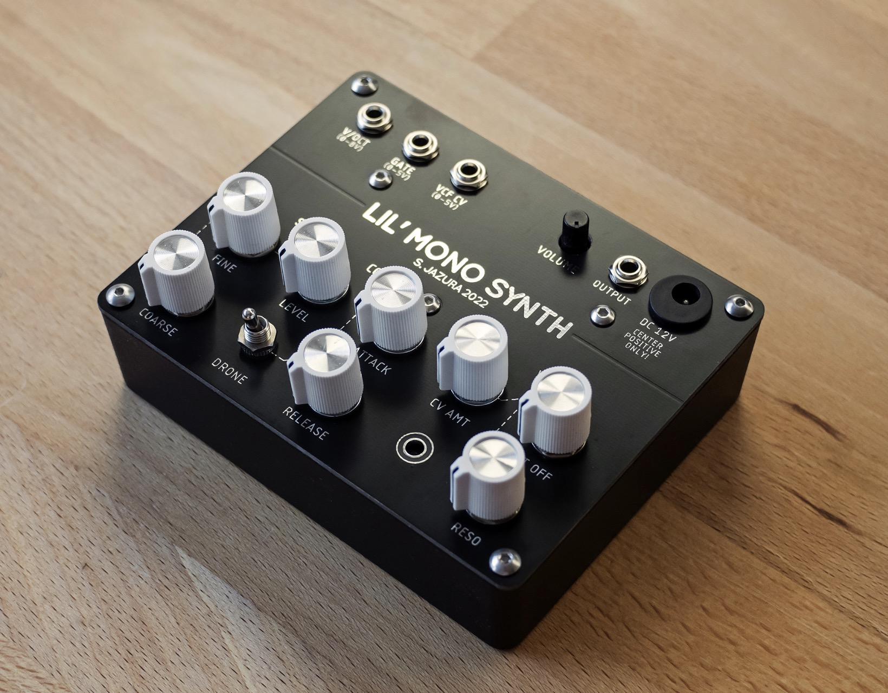

Simple east coast analog synthesizer.

It contains a sawtooth wave VCO that tracks V/Oct, a square wave sub-oscillator, a simple and dirty sounding resonant VCF, a VCA and an attack/release envelope generator that can modulate the amplitude and the filter cut-off frequency. The VCO doesn’t track very precise but okay-ish pitch tracking with +/-5 cents of tracking error can be expected over a span of 4 to 5 octaves.
All DB data
- Name: Lil’ mono
- Author: S Jazura
- Link: https://github.com/diysynth/STANDALONE-DEVICES/tree/main/LIL’-MONO-SYNTH
- Demo: https://www.youtube.com/watch?v=dz-d9Gt5xwY
- Picture: ../pics/lil-mono.jpg
- Description: Simple east coast analog synthesizer.
- Notes: It contains a sawtooth wave VCO that tracks V/Oct, a square wave sub-oscillator, a simple and dirty sounding resonant VCF, a VCA and an attack/release envelope generator that can modulate the amplitude and the filter cut-off frequency. The VCO doesn’t track very precise but okay-ish pitch tracking with +/-5 cents of tracking error can be expected over a span of 4 to 5 octaves.
- Artifacts: {“Schematic”=>true}{“PCB”=>false}{“BOM”=>true}{“FW”=>false}{“Docs”=>false}{“Enclosure”=>true}
- Tags: MonophonicModularAnalog
- Level: Intermediate
{kind=link}